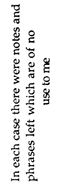

|  |

Now:The moon and I can only banter to work this out.
It's our job, even circular, and because I mind.
I have been left here. ( & and the matter of not
really being a friend is a burden--remember
the detective
(read poet or friend or neighbor)
is a kind of rope
and not all evidence is forensic.)
Close the eye to open itbelieve
not only what you're told
by the green repetitive sea, the open-
windowed houses, any room above trees
( the chronology is summer, spring,
winter. the methods: gun, gun,
water & wind. )
The spray beats landward into pages of
Judgement
The medium splays in her armless chair
each Friday night scanning
the scripture of the dreaming eye
Prophetic socket!
Any body is a day of rain, any body
is towards bones & light
hair shredded in some terrible closet
(It is important to know that all three had thick
dark hair and coincidentally two of them were
from the same city, though of these two they
moved away into different countries )
It just isn't possible to always be a woman
in a certain place or a certain time
of the self with immunity.
I sit upright and hidden. Great stones are here
holding down the land while my first eye hangs
a blue-sky moon on either side of day and night.
(You'd think the medium was useless with her
rattled breath. The terrible push to track
the other side for spattered dots of flight
taking shape . . . . . . )
The missing leave express invitations
making us
the beautiful suspects.
The black-out curtain stirs like a woman's hair
within her lover's fist.
Dot-dash syllables return less like mist
than before, a hapless mouth
to shape the names gone nowhere we know.
But close, close.
their chaperone gaze. Parallel lights.
Infinite mode (s) of heart's desire.
Act & Answer. A tumble of invisible hairsaltcold
windowsThe missingThe missedthe
mind's elastic eye
|